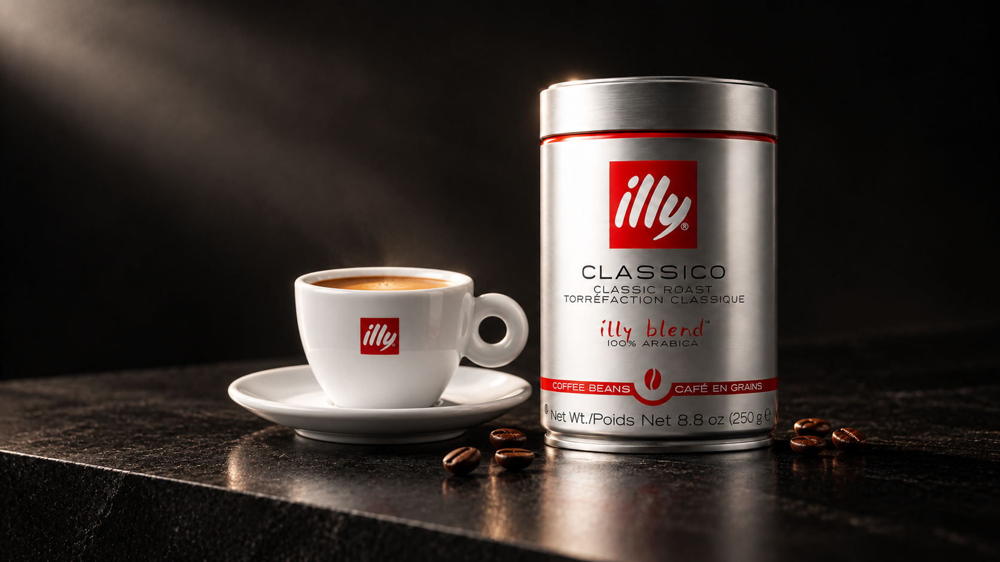
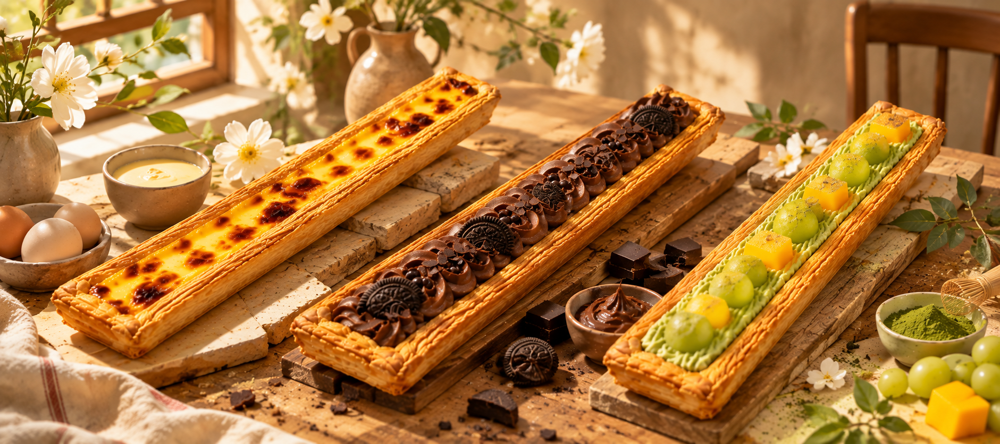

以 AI 参与商业视觉与影像创作，探索产品表达、餐饮视觉与叙事短片。
围绕产品、餐饮和动态影像，呈现视觉目标、关键判断与最终成果。
概念宣传片与产品视觉。通过金属材质、深色空间与蒸汽氛围建立统一表达。

围绕产品长度、口味区分与食欲表现，建立外卖首图和系列视觉。
将餐饮氛围、菜品表达、品牌信息与外卖使用场景整合为一套系列视觉。
电商产品主图与场景视觉，探索包装主体、饮用场景与信息层级之间的关系。
以地域、记忆、身体和情绪为线索的 AIGC 影像实践。
参与 8 部、累计约 280 集，覆盖从剧本分析到剪辑配音的多个环节。
先验证关键画面，再扩展系列与动态制作，并在输出前完成审核。
关注 AI 在商业视觉、影像创作和内容生产中的实际应用。